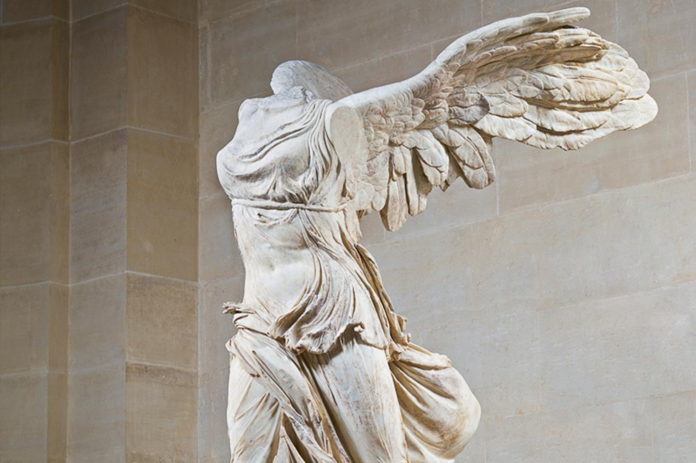
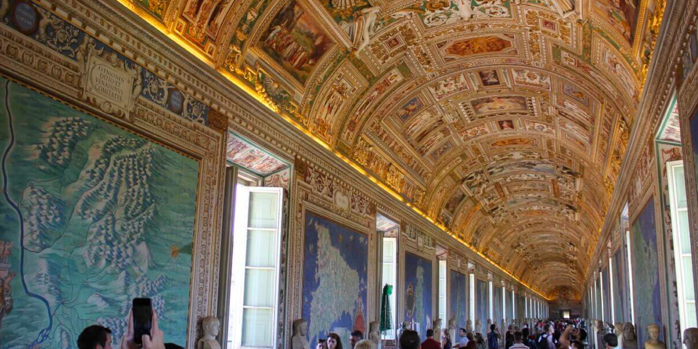
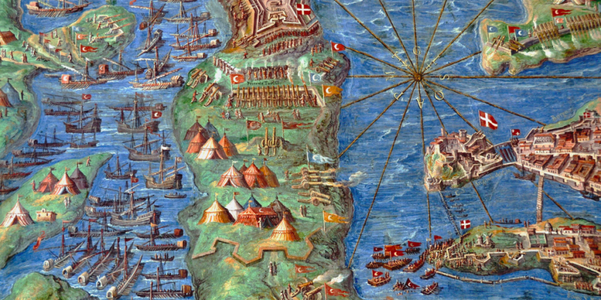
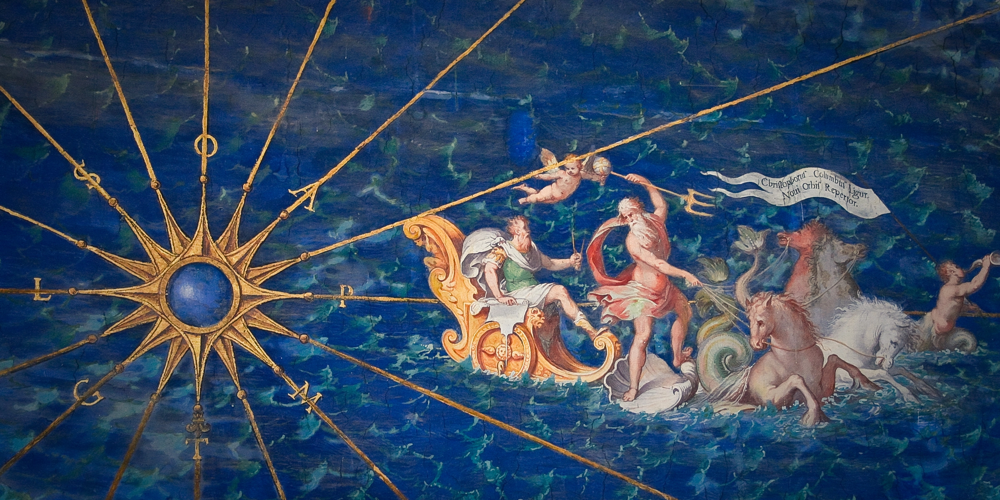

This project maps many popular art museums around the globe. Consistently, Musée du Louvre, located in Paris, France, has been the most visited art museum. Established in 1793, it houses some of the world’s most famous artwork, including the elusive Mona Lisa, the Venus de Milo, and Winged Victory of Samothrace (pictured left). Around 190 BC, Winged Victory was made as an offering to the gods on the Greek Island of Samothrace. The statue is made of fine marble, representing Nike, the goddess of Victory.
The World's Most Beloved Art Museums

The Musei Vaticani, located within the Vatican City, are also highly visited. These museums feature several renowned, quintessential Renaissance masterpieces, such as Michelangelo's Sistine Chapel and the School of Athens (pictured right). The School of Athens, a fresco by Raphael, was finished in 1511 as a part of Raphael's commision to decorate the rooms now known as the Raphael Rooms. This painting is often studied as one of the pinnacles of Renaissance art, as it borrows ideas from Ancient Greek philosophy and other classical templates.

The interactive map below is styled after the Gallery of Maps in the Musei Vaticani. This gallery contains a series of painted topographical maps commissioned by Pope Gregory XIII in the late 16th century. The walls of the gallery are covered with forty different maps of various Italian regions, and the ceiling above each map illustrates the major religious events of that area. The maps showcase exquisitely beautiful, opulent detail. While this ornamentation may not be possible to recreate as a Mapbox tileset, some of the color palette, font styles, and textures are represented.



The interactive map also hosts several helpful features. The sequence bar on the left allows one to sequence through 7 different time stamps from 2015-2021. Clicking on each red proportional symbol will call a pop-up with information about that museum. Generally, the data reveal that museum attendance has flourished rapidly over time, only to be majorly halted by many museum closures during the start of the pandemic in 2020, and art museums have since struggled to regain solid visitation numbers. This map data was sourced from the annual reports that these museums have published. Unfortunately, many smaller, less popular museums had to be left off this map, as their reports are not published publicly.